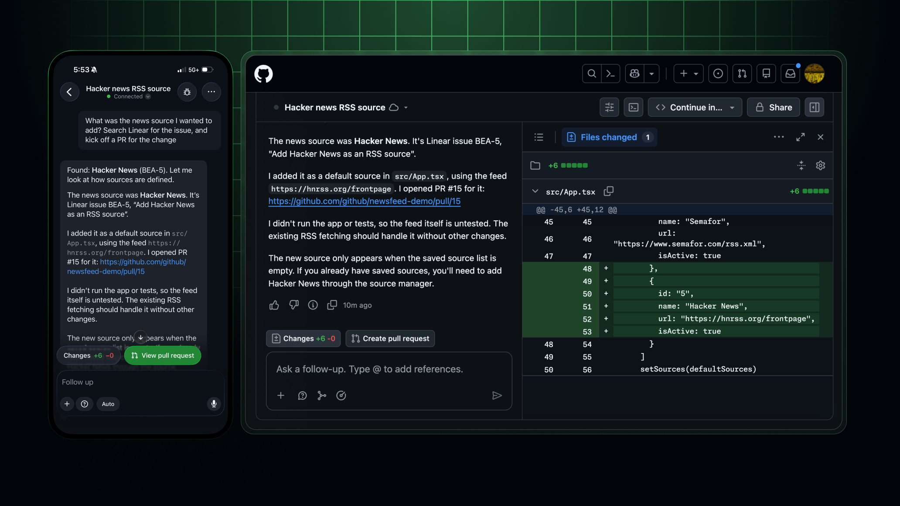
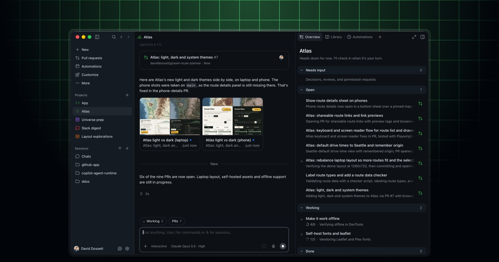
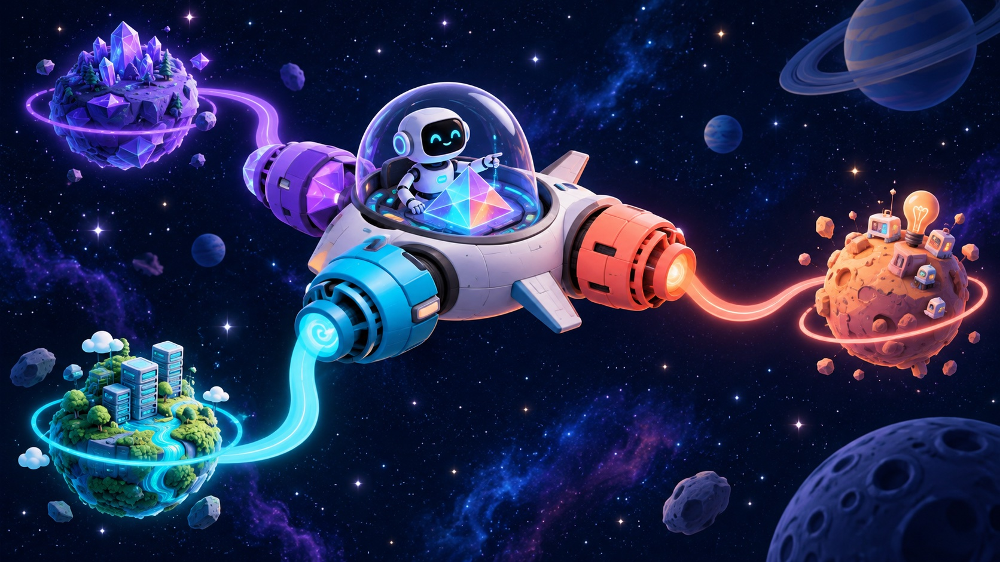
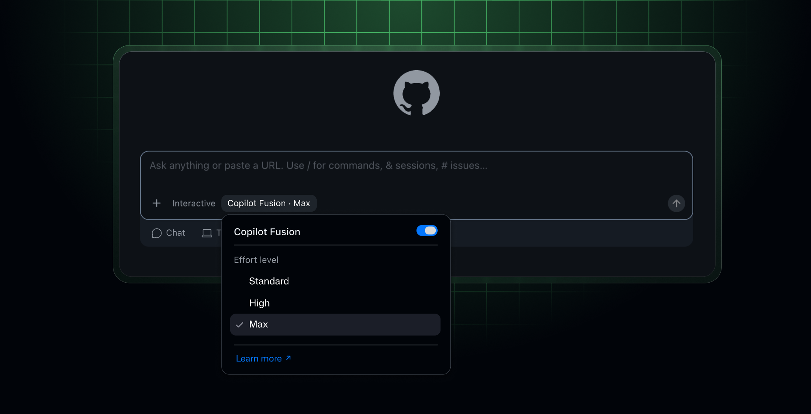
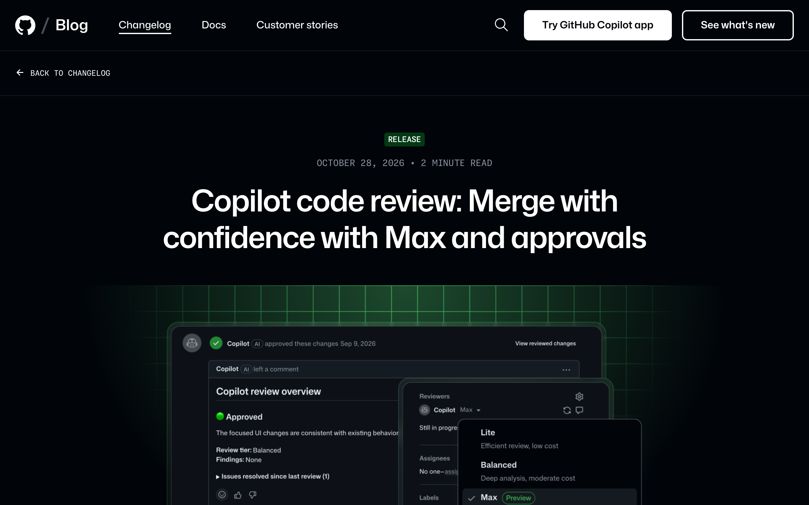
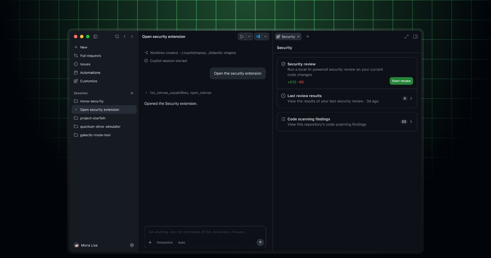
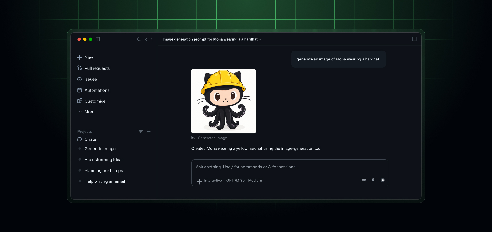
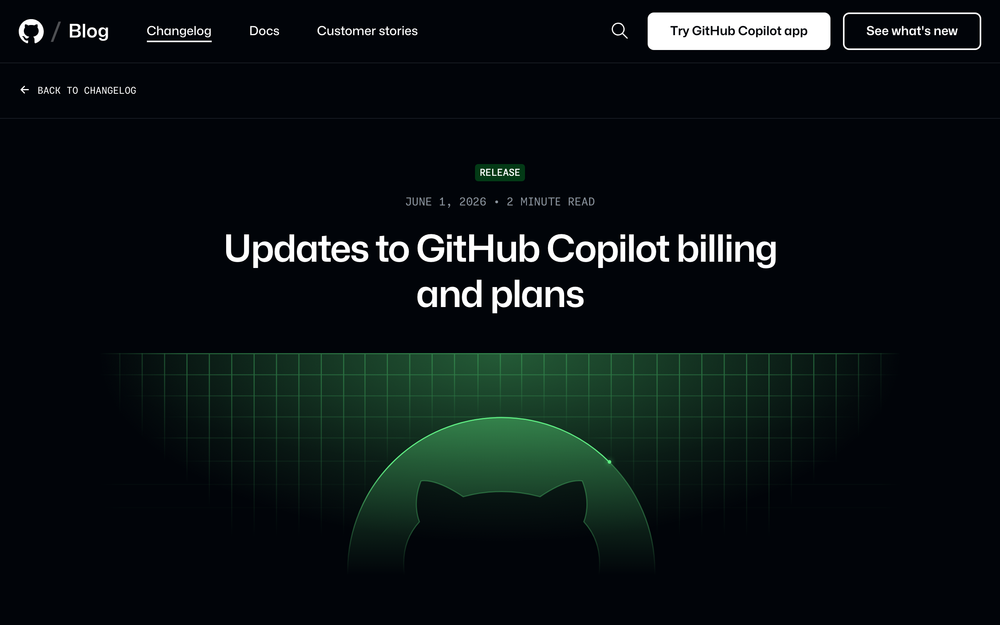

1. Opener: the big shift
- Theme: velocity, intelligence, quality across the whole SDLC
- Agent sessions follow you across app, VS Code, CLI, and web
- Today's buckets: App, Canvases & Projects · Models · Review & security · Platform · Enterprise & billing · What to do Monday
2. GitHub Copilot app
New- Start a cloud agent session on any device, continue it anywhere (app, VS Code, CLI, web)
- My work: start sessions from an issue, pull request, prompt, or earlier session across all connected repositories; Copilot CLI sessions show up here too
- Parallel sessions: each runs on its own git worktree and branch
- Verify, then ship: review the plan and diff, test in the integrated terminal and browser, open a PR that uses your existing checks; Agent Merge can address review comments, fix failing checks, and merge when your conditions are met
- Hosts Canvases, Projects, and Automations (next sections)
- Connectors: Vercel, Cloudflare, Sentry and others authenticate once across app, CLI, and web

Source: Changelog: GitHub Copilot app, Universe releases · Changelog: Work from anywhere · Changelog: Expanded app availability
3. Canvases
New- What it is: a structured, interactive surface over a work object — a plan, pull request, browser session, terminal, release checklist, triage board, incident, spreadsheet, or dashboard — open beside the chat
- Bidirectional: the agent updates the canvas as it works; you edit, reorder, approve, or redirect on the same surface
- Three participants: you inspect and steer, the agent reads state and takes structured actions, and the app connects the canvas to the real artifact and enforces which actions are allowed
- Chat still matters: chat is for intent and ambiguity; the canvas is where that intent becomes visible work you can verify
- Get one: browse featured canvases under Customize › Canvas; some arrive through plugins (for example, Azure DevOps, or the GitHub Security extension for code scanning alerts)
- Build one: type
/create-canvasin a session and describe the workflow
Source: Changelog: Expanded app availability — Canvases · Docs: Working with canvas extensions
4. Copilot Projects & Automations
Public preview- Give Copilot a goal: describe the outcome and constraints; Copilot runs as many agent sessions as the work needs and brings back results, such as pull requests, for review
- Spans repos — or none: add one or more repositories, or start without one for research, planning, or launch work
- Library: shared context — your files under User, agent-created artifacts under Agent
- Overview: work grouped as Needs input, Open, Working, and Done; open any session to review or steer it
- Connected context: Slack threads, Figma designs, and meeting notes alongside the code
- Project automations: ask in the project chat for recurring work; manage it from the Automations tab
- Standalone Automations: reusable tasks on triggers, schedules, or on demand; can propose improvements from outcomes; new tools, triggers, and cost controls; cloud automations run even when your laptop is asleep
- Focused change in one repo? Start a session from that repo. Broader, evolving goal? Start a project.

Source: Changelog: Copilot app, Universe releases · Docs: Working with projects
5. Copilot Fusion
GA*
- Effort levels: Standard, High, Max
- Orchestrates models per subtask (single, cascade, critique workflows); admins can set model policy and defaults
- GitHub benchmark claims: Fusion Max scores close to a leading single model at roughly half the API cost and ~40% faster per task
- Surfaces: VS Code, Copilot app, Copilot CLI, JetBrains

Source: Changelog: Route and orchestrate models with Copilot Fusion
6. Code review: Max tier
Preview*- GitHub reports the highest F1 score for high-severity issues
- Use Max on risky paths (auth, payments, infra); keep Balanced elsewhere
- Copilot can now act as reviewer and approver; approvals reset when new commits are pushed; configurable at repo/org/enterprise level
- Related: pull request stacks to break big PRs into smaller linked reviews

Source: Changelog: Max and approvals · Blog: Universe 2026 — Evolving every layer of the stack
7. Security & code quality
- Security extension: review code and agent-generated work next to code scanning alerts in one interface
- AI Scan: find vulnerabilities in any language (beyond CodeQL), hand fixes to Copilot; code scanning for AI applications is in public preview
- AI push protection: blocks unstructured secrets like passwords at push time — for humans and agents alike
- Expanded enhanced code scanning and monitoring for enterprises and AI-generated code

Source: Blog: Evolving every layer of the stack · Changelog: Security extension
8. Image generation & desktop automation
Public preview- Image generation and editing from chat
- Desktop automation with explicit user approval

Source: Changelog: Generate and edit images · Changelog: Desktop apps
9. Platform & workflow improvements
- Workflow lockfiles and multi-cloud compute for reliability
- Role-based moderation for GitHub Issues; issue artifacts
- Pull request stacks
- CLI attachments: images and video straight from the terminal
- Webhook IP ranges documented in the Meta API
Source: GitHub Changelog
10. Enterprise & pricing
- GitHub Enterprise reported to include Copilot features (app, automations, code review) without a separate Copilot subscription
- Shift toward AI usage-based billing (AI credits) and per-user budgets; the individual Copilot Max plan offers more included credits
- Plan for cost controls and budgets early

11. What to do Monday
- Try the Copilot app with one real issue, end to end
- Start a Copilot Project for one cross-repo or research goal, and open a canvas while you work
- Pilot one Automation on a low-risk chore
- Enable AI push protection and try AI Scan on a non-CodeQL repo
- Use Max review on one high-risk service
- Review your Copilot billing and budgets
Sources
- GitHub Blog — Universe 2026: Evolving every layer of the stack
- Changelog — GitHub Copilot app, Universe releases
- Docs — Working with projects in the Copilot app
- Changelog — Expanded Copilot app availability (Canvases)
- Docs — Working with canvas extensions
- Changelog — Copilot Fusion
- Changelog — Copilot code review: Max and approvals
- Changelog — Code scanning for AI applications (public preview)
- Changelog — Work from anywhere with a new connected Copilot cloud experience
- Changelog — Security extension for the GitHub Copilot app
- Changelog — Generate and edit images directly in Copilot
- Changelog — Updates to Copilot billing and plans
- Changelog — Search and filter for budgets
- Changelog — Copilot in JetBrains, Universe releases
- GitHub Universe recap
*Availability labels are provisional. Availability, benchmark, and pricing claims remain subject to confirmation against the official sources linked above.